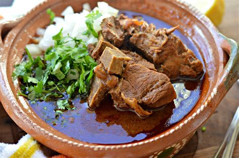

Birria

Description
This Mexican recipe is delicious yet difficult to make.
Ingredients
- 4 guajillo
- 1/2 onion
- 8 cloves garlic
- 1/4 cup vinegar
- 2lb tomatoes
Steps
- Trim excess fat off meat if any
- Soak the meat for 2 to 4 hours
- Prep chile paste an hour before meat is ready
- Separate seeds and skins
- Rinse and boil skins to soften them
- Roast seeds carefully, avoid black
- Drain meat
- Dip meat into sauce